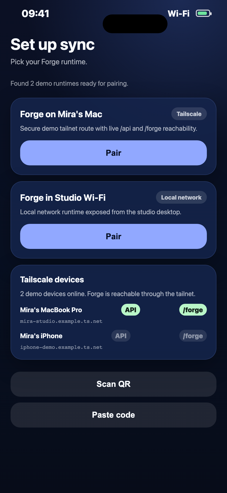
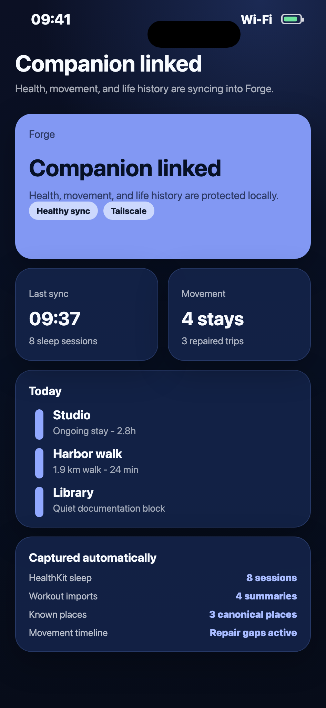
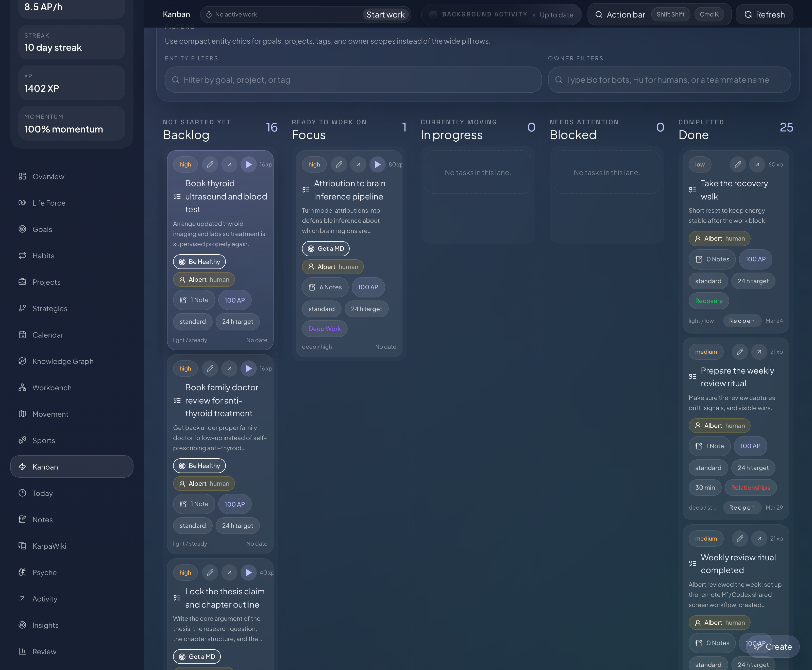
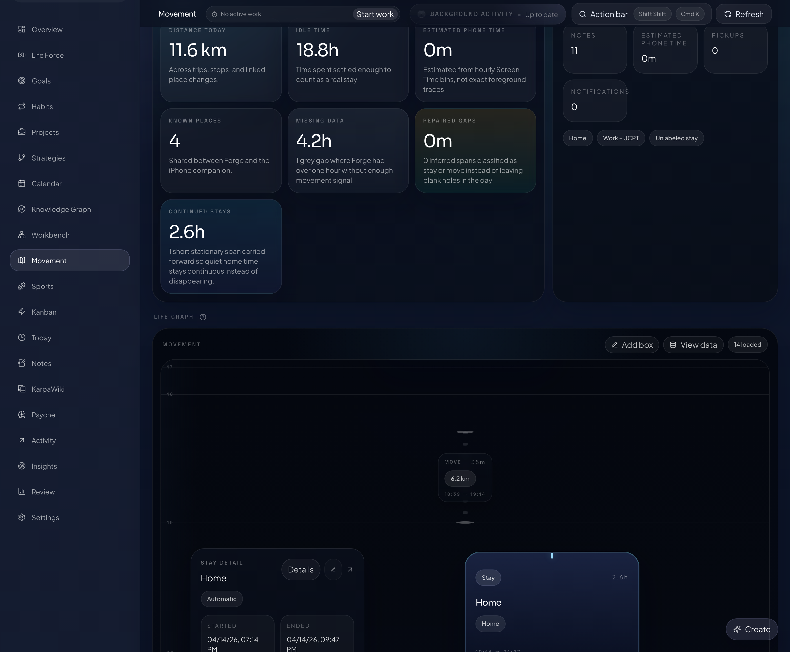
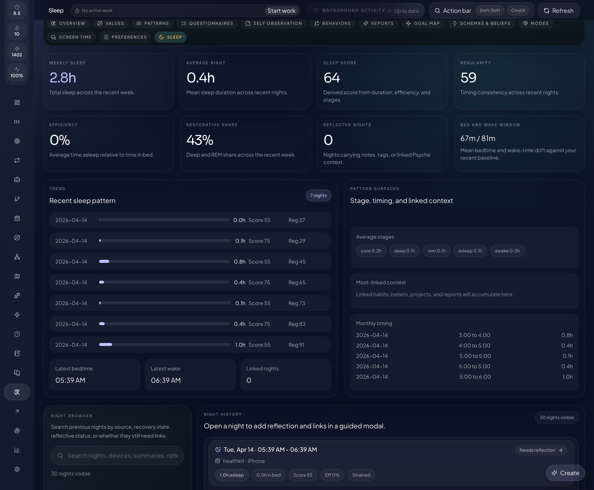

OpenClaw plugin
Use the published plugin when OpenClaw is the main host runtime.
openclaw plugins install forge-openclaw-plugin
openclaw plugins enable forge-openclaw-plugin
openclaw gateway restart
openclaw forge healthGetting Started
Forge is a local-first system for goals, projects, tasks, task runs, notes, wiki pages, calendar planning, preferences, health records, and Psyche data. This docs site is the engineering reference for the runtime, repository, integrations, and API.
Install Paths
Use the published plugin when OpenClaw is the main host runtime.
openclaw plugins install forge-openclaw-plugin
openclaw plugins enable forge-openclaw-plugin
openclaw gateway restart
openclaw forge healthIf some OpenClaw `2026.4.x` builds block the normal install path, use this temporary npm-based bypass instead.
npm install -g forge-openclaw-plugin
node -e 'const cp=require("child_process"); const fs=require("fs"); const path=require("path"); const p=process.env.HOME+"/.openclaw/openclaw.json"; const j=JSON.parse(fs.readFileSync(p,"utf8")); const pluginPath=path.join(cp.execSync("npm root -g",{encoding:"utf8"}).trim(),"forge-openclaw-plugin"); j.plugins ??= {}; j.plugins.allow = Array.from(new Set([...(j.plugins.allow || []), "forge-openclaw-plugin"])); j.plugins.load ??= {}; j.plugins.load.paths = Array.from(new Set([...(j.plugins.load.paths || []), pluginPath])); j.plugins.entries ??= {}; j.plugins.entries["forge-openclaw-plugin"] = { enabled: true, config: { origin: "http://127.0.0.1", port: 4317, actorLabel: "aurel", timeoutMs: 15000 } }; fs.writeFileSync(p, JSON.stringify(j, null, 2)+"\n"); console.log("Configured", pluginPath);'
openclaw gateway restart
openclaw plugins info forge-openclaw-plugin
openclaw forge healthUse the Python plugin when Hermes is the main agent runtime.
~/.hermes/hermes-agent/venv/bin/python -m ensurepip --upgrade
~/.hermes/hermes-agent/venv/bin/python -m pip install --upgrade ./plugins/forge-hermesUse the repo directly when you need the full Forge app and API locally.
npm install
npm run deviPhone Companion
Forge Companion is the native iPhone bridge for Forge. It pairs with your Forge runtime, imports HealthKit sleep and workouts, captures passive movement history, and gives you a native life timeline plus diagnostics while Forge itself stays local-first.
The app is currently in beta through TestFlight while the sync, movement repair, and timeline systems are being tightened in real-world usage.




Docs Map
Engineering-style inventory of Forge product capabilities, record types, and runtime behaviors.
Production stack, runtime addresses, storage model, route families, repository layout, and package boundaries.
Local dev setup, test commands, release paths, and how docs and OpenAPI generation fit into the repo workflow.
OpenClaw, Hermes, Codex, iPhone companion, and shared multi-user runtime notes.
Interactive API explorer with route descriptions, typed payloads, live Try it out support, and the downloadable generated spec.
Public support contact page for Forge Companion and release review workflows.
Public privacy policy for Forge Companion covering HealthKit, movement data, and paired-runtime sync.
Current Stack
| Layer | Current stack | Notes |
|---|---|---|
| Web UI | React 19, TypeScript 5.8, Vite 6, Tailwind CSS 4 |
Served under /forge/ in production and local dev.
|
| Backend | Fastify 5, TypeScript, OpenAPI 3.1 |
Spec is generated from server/src/openapi.ts.
|
| Storage | SQLite + file-backed wiki vault | Forge keeps canonical runtime records locally first. |
| Desktop / native | Tauri 2 and iOS companion | Desktop shell plus HealthKit-powered iPhone companion. |
| Docs | GitHub Pages static site + rendered OpenAPI reference | The Pages artifact includes this site and the generated spec. |
Runtime Addresses
UI: http://127.0.0.1:3027/forge/
API: http://127.0.0.1:4317/api/v1/
Spec: http://127.0.0.1:4317/api/v1/openapi.jsonDocs home: /forge/
Engineering: /forge/engineering.html
Development: /forge/development.html
Integrations: /forge/integrations.html
API docs: /forge/api/
Web Surfaces


